📜 西王国的子爵
Viscounts of the West Kingdom · 设计：Shem Phillips & S J Macdonald · Garphill Games 出版 · 1–4 人 · 官方英文规则书全文翻译（32 页 · AI 辅助机翻）
本页收录《西王国的子爵》（Viscounts of the West Kingdom, 2020）的原版官方规则书全部 32 页（底本：Garphill Games 官方（Shopify 店铺 CDN，与批次1 Paladins 同源 store 71346225238），ViscountsRulebook.pdf），逐页随图排列，点击任意图片即可放大查看；每页下方默认折叠了该页的 AI 辅助中文机翻对照，需要时可展开。规则内容归 Garphill Games 及版权方所有，收录仅供个人学习查阅。
整理说明：机翻对照按本站术语口径对齐（牌库/手牌/回合/轮/板块/指示物等），PDF 图文混排页的语序可能与原书视觉顺序略有出入；规则细节请一律以页面上方原书页面为准。
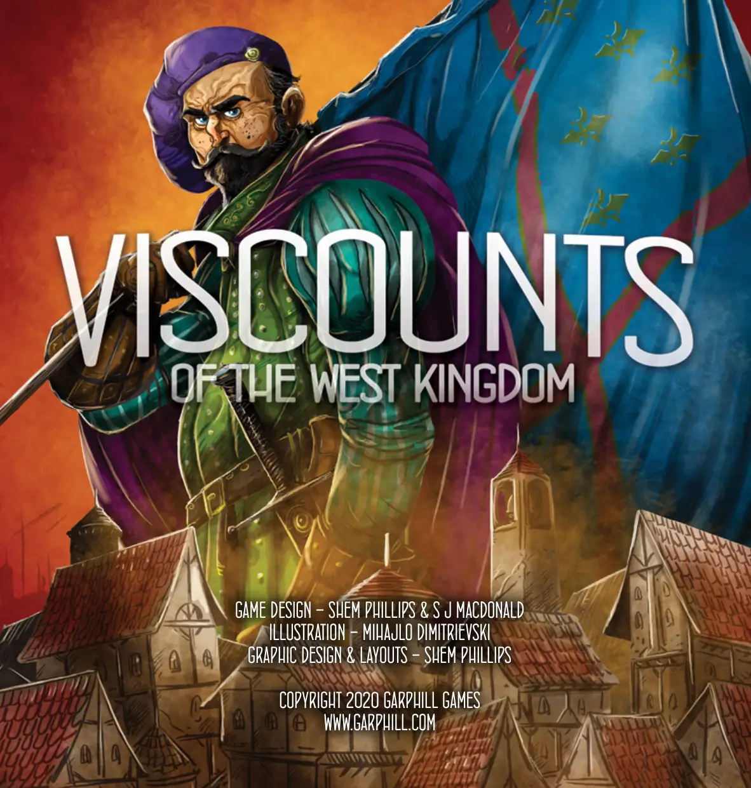
📝 第 1 页 AI 机翻对照（点击展开）
游戏设计 - shem phillips & s j macdonald
插图 - mihajlo dimitrievski
平面设计与版式 - shem phillips
版权 2020 garphill games
www.garphill.com
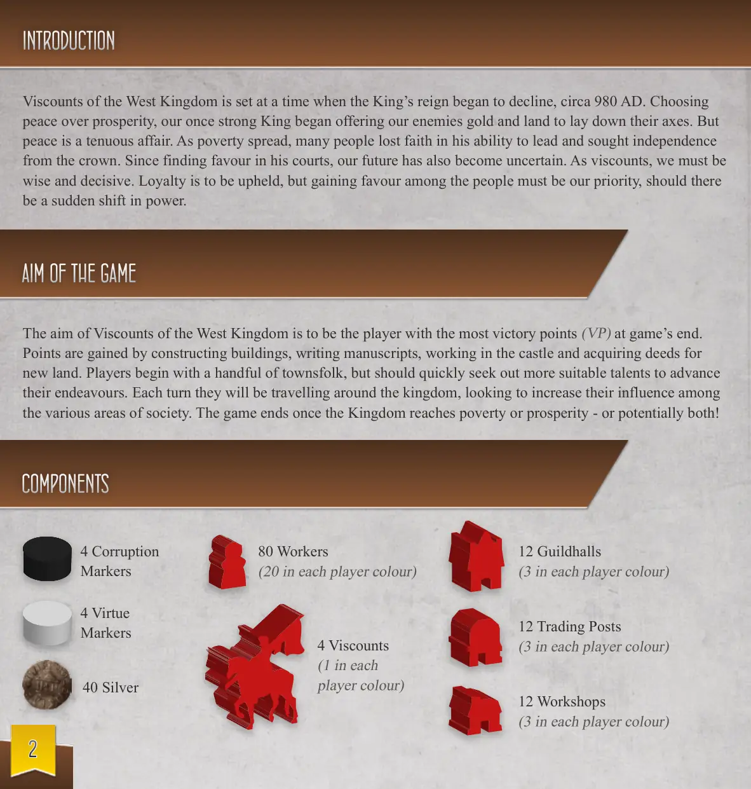
📝 第 2 页 AI 机翻对照（点击展开）
引言
西王国伯爵（Viscounts of the West Kingdom）设定于国王统治开始衰落的时期，约公元980年。我们的国王选择了和平而非繁荣，开始向我们的敌人提供黄金和土地，让他们放下战斧。但和平是一件脆弱的事情。随着贫困蔓延，许多人对他领导的能力失去信心，并寻求脱离王权的独立。自从在他的宫廷中获得青睐后，我们的未来也变得不确定。作为伯爵，我们必须明智且果断。忠诚应当被维护，但如果权力突然转移，我们必须优先获得人民的青睐。
西王国伯爵的目标是在游戏结束时拥有最多的胜利点（VP）。通过建造建筑、撰写手稿、在城堡工作以及为新土地获得契约来获得分数。玩家开始时只有少数几个城镇居民，但应该尽快寻找更合适的人才来推进他们的努力。每个回合，他们将在王国各地旅行，试图增加他们在社会各个领域的影响力。一旦王国陷入贫困或繁荣——或者可能两者兼有！游戏即结束。
游戏组件
游戏目标
12 行会馆
（每种玩家颜色3个）
80 工人
（每种玩家颜色20个）
4 腐败标记
4 美德标记
40 银币
12 贸易站
（每种玩家颜色3个）
12 工作坊
（每种玩家颜色3个）
4 伯爵
（每种玩家颜色1个）
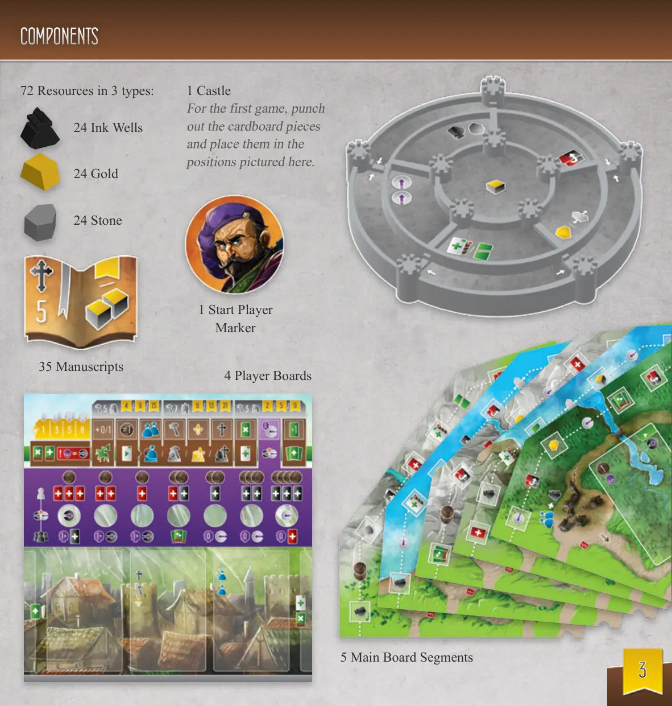
📝 第 3 页 AI 机翻对照（点击展开）
游戏组件
24 金币
35 手稿
1 起始玩家标记
5 主板块片段
4 玩家版图
24 墨水瓶
24 石头
1 城堡
第一次游戏时，
请将纸板部件冲压出来，
并放置在图示的位置。
72 资源，分3种类型：
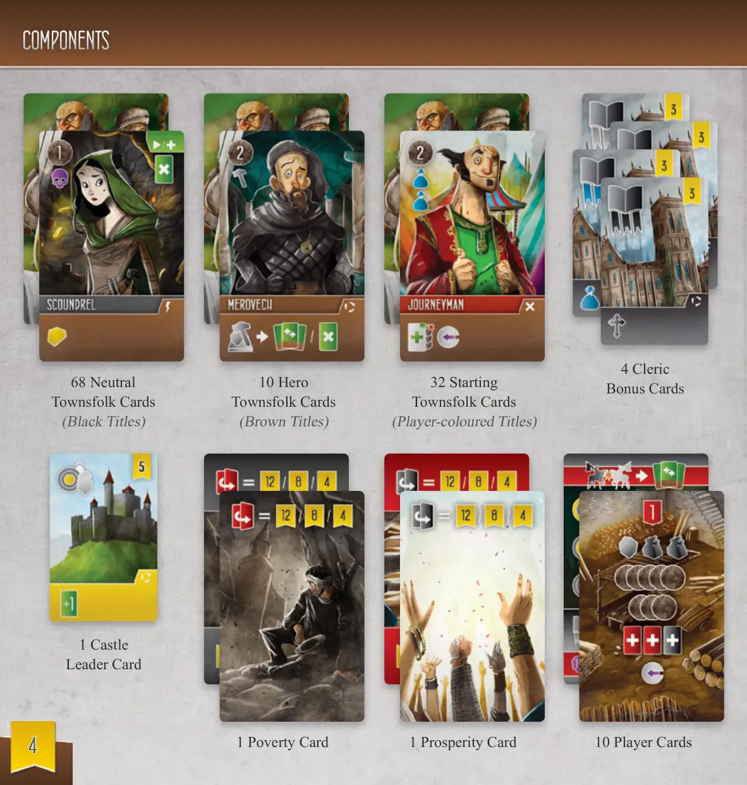
📝 第 4 页 AI 机翻对照（点击展开）
游戏组件
68 中立
城镇居民卡
（黑色标题）
1 贫困卡
10 英雄
城镇居民卡
（棕色标题）
1 繁荣卡
32 初始
城镇居民卡
（玩家颜色标题）
10 玩家卡
4 牧师
奖励卡
1 城堡
领袖卡
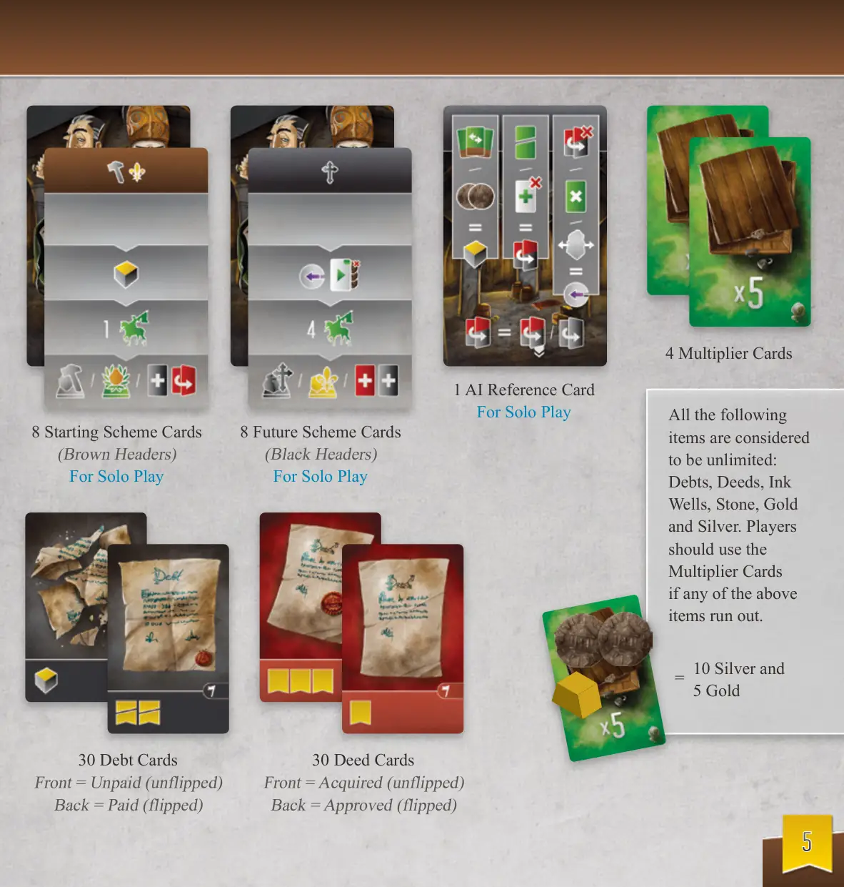
📝 第 5 页 AI 机翻对照（点击展开）
8 初始计划卡
（棕色标题）
用于单人模式
8 未来计划卡
（黑色标题）
用于单人模式
1 AI参考卡
用于单人模式
30 债务卡
正面 = 未支付（未翻转）
背面 = 已支付（已翻转）
30 契约卡
正面 = 已获得（未翻转）
背面 = 已批准（已翻转）
4 乘数卡
以下所有物品
被视为无限供应：
债务、契约、墨水瓶、石头、金币和银币。如果上述
任何物品用完，玩家应使用
乘数卡。
10 银币和
5 金币
=
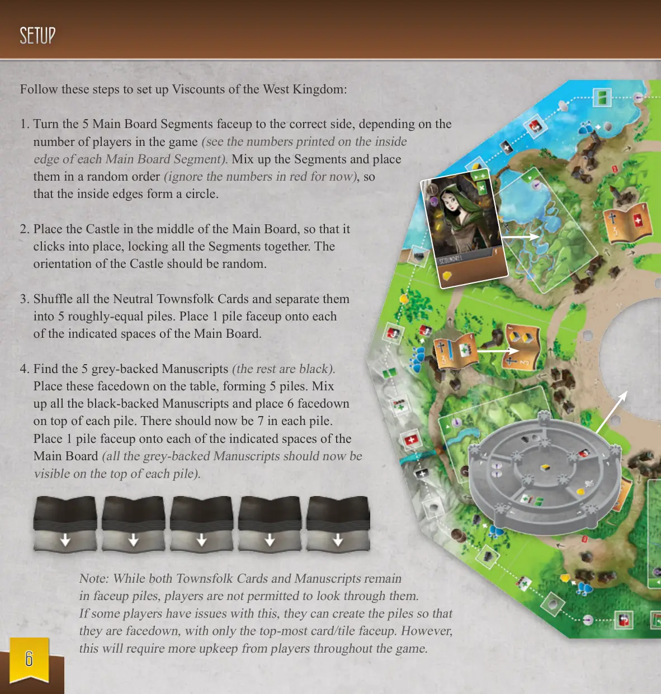
📝 第 6 页 AI 机翻对照（点击展开）
设置
按照以下步骤设置《西王国伯爵》(Viscounts of the West Kingdom)：
- 根据游戏中的玩家数量，将5个主板块段(correct side)正面朝上放置到正确的一面（参见每个主板块段内侧边缘印制的数字）。将这些板块段混合，然后以随机顺序放置（暂时忽略红色数字），使内侧边缘形成一个圆形。
2. 将城堡放置在主板块中央，使其咔嗒一声就位，将所有板块段锁定在一起。城堡的方向应该是随机的。
3. 洗混所有中立城镇居民卡，并将它们分成5大致相等的堆。将1堆正面朝上放置到主板上标记的每个空间上。
- 找到5张灰色背面的手稿（其余是黑色）。将这些手稿正面朝下放在桌上，形成5堆。将所有黑色背面的手稿混合，然后在每堆上放置6张正面朝下。现在每堆应该有7张。将1堆正面朝上放置到主板上标记的每个空间上（所有灰色背面的手稿现在应该在每个堆的顶部可见）。
注意：虽然城镇居民卡和手稿都保持正面朝上的堆，但玩家不允许翻看它们。如果某些玩家对此有异议，他们可以创建堆时使其正面朝下，只有最顶部的卡/板块正面朝上。然而，这将要求玩家在游戏过程中进行更多的维护工作。
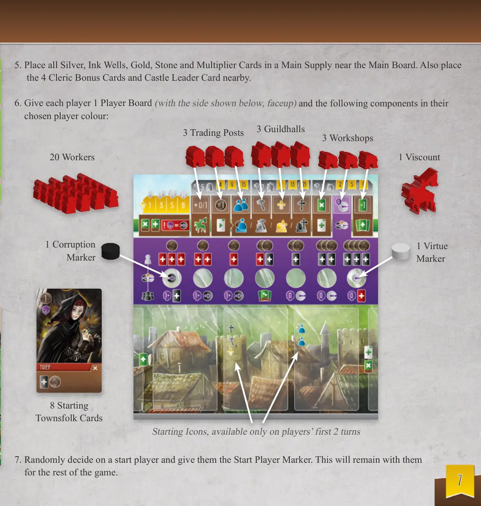
📝 第 7 页 AI 机翻对照（点击展开）
- 将所有银币、墨水瓶、金币、石头和倍数卡放置在主板块附近的主供应区。同时将4张牧师奖励卡和城堡领袖卡放在附近。
- 给每位玩家1个玩家版图（使用如下所示的一面，正面朝上）以及他们所选玩家颜色的以下组件：
- 随机决定起始玩家，并将起始玩家标记交给他们。这将在剩余的游戏中与他们同在。
1个腐败标记
20个工人
1个伯爵
3个贸易站
3个行会
3个工坊
8张起始城镇居民卡
起始图标，仅在玩家前2回合可用
1个美德标记
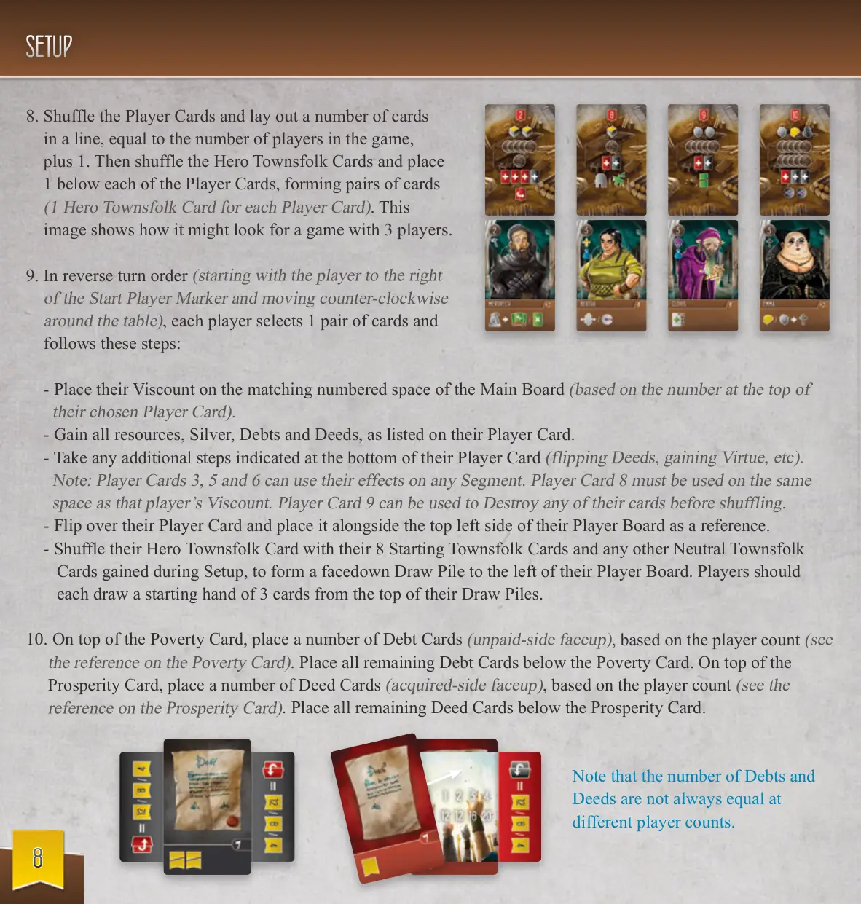
📝 第 8 页 AI 机翻对照（点击展开）
设置
8. 洗混玩家卡牌并排成一列，数量等于游戏中的玩家数量加1。然后洗混英雄城镇居民卡牌，并在每张玩家卡牌下方放置1张，形成卡牌对（每张玩家卡牌对应1张英雄城镇居民卡）。这张图片展示了3人游戏时的可能布局。
- 按逆时针回合顺序（从起始玩家标记右侧的玩家开始，围绕桌子逆时针移动），每位玩家选择1对卡牌并遵循以下步骤：
- 将他们的子爵放置在主版图上对应的编号格中（基于他们选择的玩家卡顶部的数字）。
- 获取玩家卡上列出的所有资源、银币、债务和契约。
- 执行玩家卡底部指示的任何额外步骤（翻转契约、获得美德等）。
注意：玩家卡3、5和6可以在任何段落使用其效果。玩家卡8必须与该玩家的子爵位于同一格。玩家卡9可用于在洗牌前销毁他们自己的任何卡牌。
- 翻转他们的玩家卡并将其放置在玩家版图左上角作为参考。
- 将他们的英雄城镇居民卡与他们8张起始城镇居民卡以及设置过程中获得的任何其他中立城镇居民卡洗混，形成面朝下的牌库，放置在玩家版图左侧。每位玩家应从各自牌库顶部抽取3张起始手牌。
- 在贫困卡牌上，根据玩家数量放置一定数量的债务卡牌（未支付面朝上），参见贫困卡上的参考信息。将剩余的债务卡牌放置在贫困卡牌下方。在繁荣卡牌上，根据玩家数量放置一定数量的契约卡牌（已获得面朝上），参见繁荣卡上的参考信息。将剩余的契约卡牌放置在繁荣卡牌下方。
请注意，在不同玩家数量下，债务和契约的数量并不总是相等的。
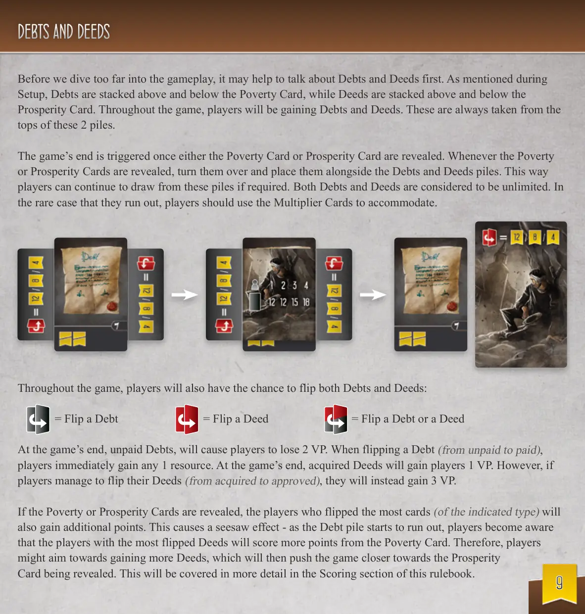
📝 第 9 页 AI 机翻对照（点击展开）
在我们深入游戏玩法之前，先谈谈债务和契约可能有所帮助。如设置阶段所述，债务卡片堆叠在贫困卡片的上方和下方，而契约卡片则堆叠在繁荣卡片的上方和下方。在整个游戏中，玩家将获得债务和契约。这些总是从这两个牌堆的顶部获取。
一旦贫困卡片或繁荣卡片被揭示，游戏就会结束。每当贫困卡片或繁荣卡片被揭示时，将它们翻转并放置在债务和契约牌堆旁边。这样，如果需要，玩家可以继续从这些牌堆中抽取。债务和契约都被视为是无限的。在极少数情况下它们用尽时，玩家应使用乘数卡来应对。
在整个游戏中，玩家还将有机会翻转债务和契约：
= 翻转一张债务
= 翻转一张契约
= 翻转一张债务或一张契约
在游戏结束时，未偿还的债务将导致玩家失去2个VP。当翻转债务（从未偿还到已偿还）时，玩家立即获得任意1个资源。在游戏结束时，获得的契约将为玩家获得1个VP。然而，如果玩家成功翻转他们的契约（从获得到批准），他们将获得3个VP。
如果贫困卡片或繁荣卡片被揭示，翻转最多指定类型卡片的玩家也将获得额外分数。这会产生一种跷跷板效应——随着债务牌堆开始减少，玩家意识到拥有最多翻转契约的玩家将从贫困卡片中获得更多分数。因此，玩家可能会倾向于获得更多契约，这将推动游戏更接近揭示繁荣卡片。这一点将在本规则书的计分部分更详细地介绍。
债务和契约
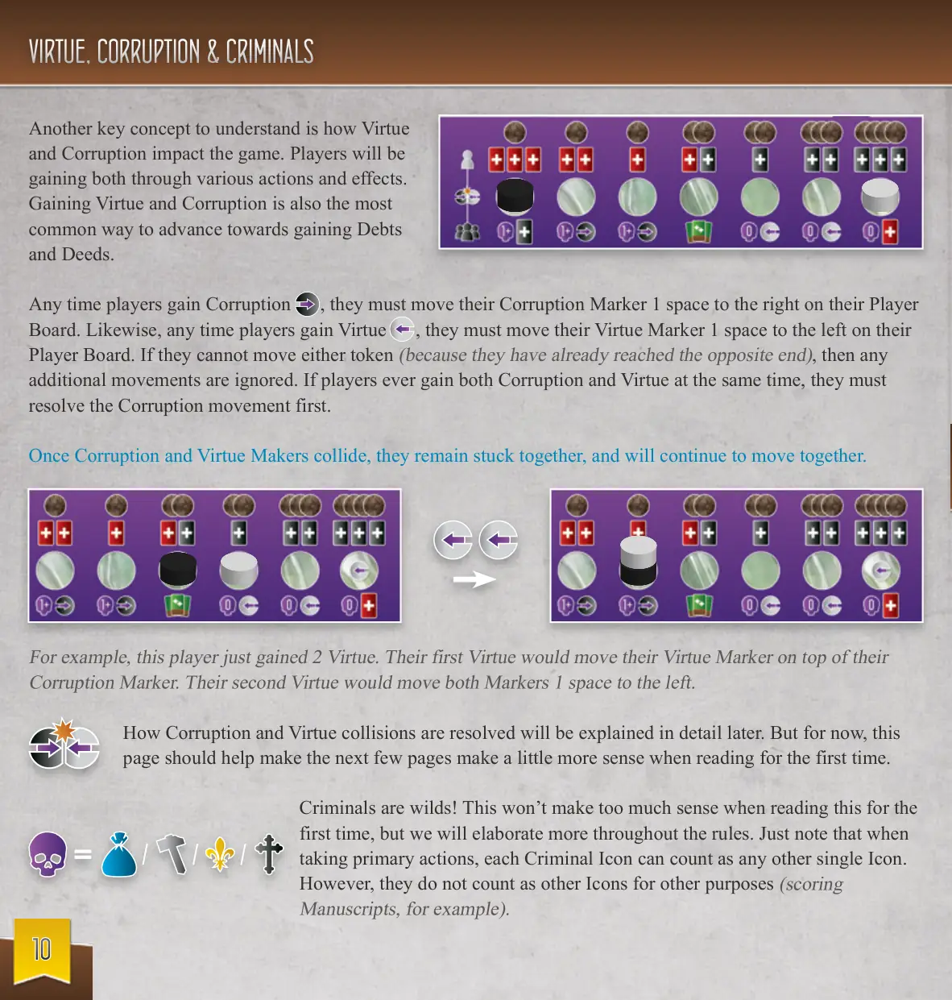
📝 第 10 页 AI 机翻对照（点击展开）
美德、腐败与罪犯
另一个需要理解的关键概念是美德和腐败如何影响游戏。玩家将通过各种行动和效果获得这两者。获得美德和腐败也是获得债务和契的最常见方式。
每当玩家获得腐败时，他们必须将腐败指示物在自己的玩家版图上向右移动1格。同样，每当玩家获得美德时，他们必须将美德指示物在自己的玩家版图上向左移动1格。如果他们无法移动任一指示物（因为他们已经到达了另一端），则任何额外的移动都将被忽略。如果玩家同时获得腐败和美德，他们必须先解决腐败的移动。
一旦腐败和美德指示物相撞，它们会保持粘在一起，并继续一起移动。
例如，这个玩家刚刚获得了2点美德。他们的第一个美德会将他们的美德指示物移动到腐败指示物之上。他们的第二个美德会将两个指示物一起向左移动1格。
腐败和美德相撞的解决方式将在后面详细解释。但现在，这一页应该能帮助初次阅读时让接下来的几页更容易理解。
罪犯是万能牌！初次阅读时这可能不太合理，但我们会在规则中进一步详细说明。只需注意，在进行主要行动时，每个罪犯图标可以计为任何其他单个图标。但是，它们不因其他目的（例如计分手稿）而计为其他图标。
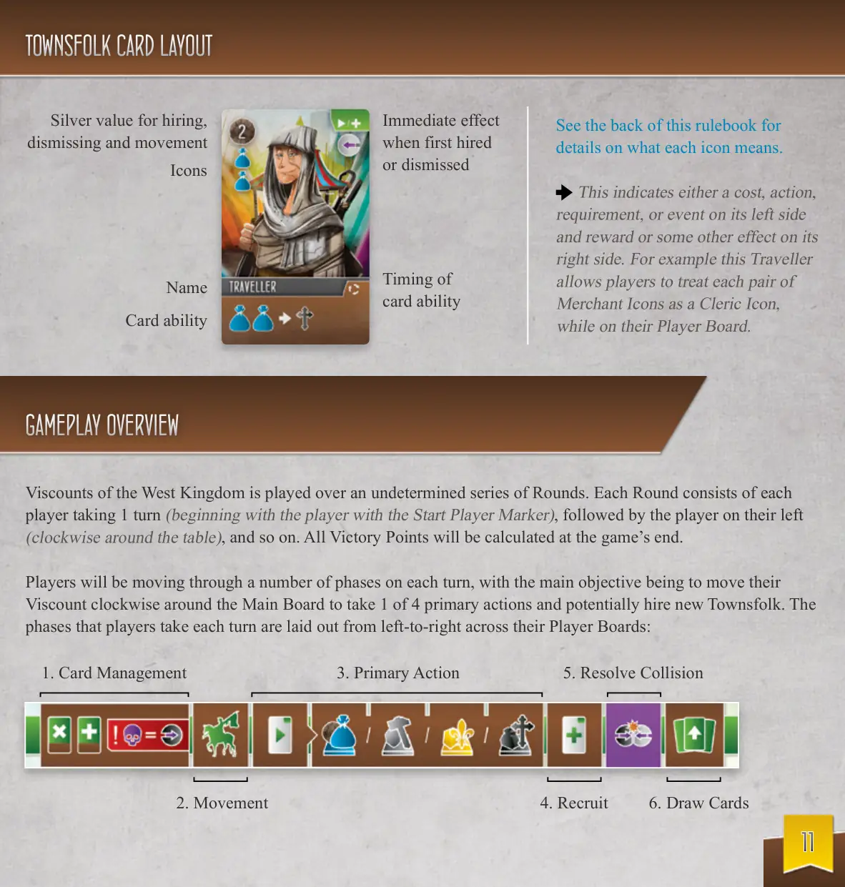
📝 第 11 页 AI 机翻对照（点击展开）
镇民卡牌布局
1. 卡牌管理
2. 移动
3. 主要行动
4. 招募
5. 解决冲突
6. 摸牌
雇佣、解雇和移动的银币价值
图标
名称
卡牌能力
卡牌能力的时机
首次雇佣或解雇时的即时效果
请参阅本规则书背面了解每个图标的详细说明。
这表示其左侧的成本、行动、要求或事件，以及右侧的奖励或其他效果。例如，这张旅行者卡允许玩家在他们的玩家板上将每对商人图标视为一个牧师图标。
《西王国子爵》(Viscounts of the West Kingdom) 在不确定的轮数中进行。每轮包括每位玩家进行1个回合（从持有起始玩家标记的玩家开始），然后是坐在其左侧的玩家（顺时针围绕桌子），依此类推。所有胜利点将在游戏结束时计算。
玩家在每个回合中将经历多个阶段，主要目标是让他们的子爵围绕主版图顺时针移动，以执行4个主要行动之一，并可能招募新的镇民。玩家在每个回合经历的阶段从左到右排列在他们的玩家板上：
游戏概览
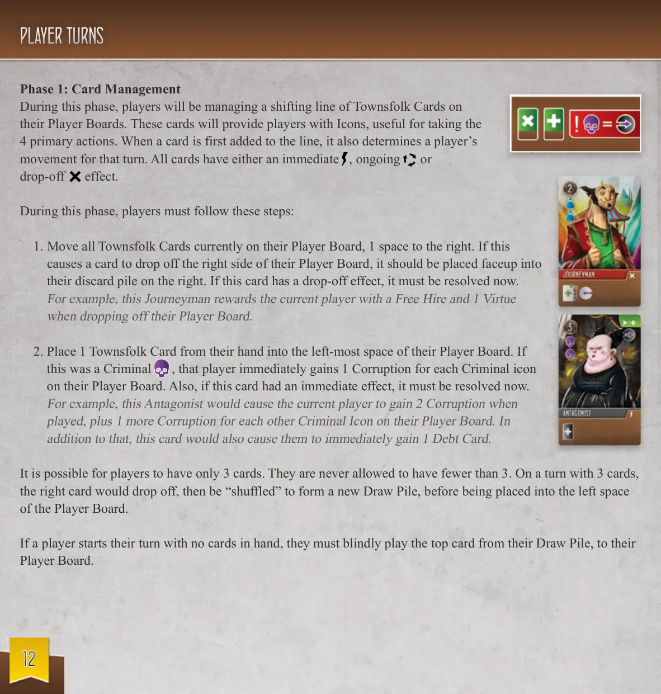
📝 第 12 页 AI 机翻对照（点击展开）
阶段1：卡牌管理
在此阶段，玩家将管理其玩家版图上不断变化的镇民卡序列。这些卡牌将为玩家提供图标，用于执行4个主要行动。当一张卡牌首次被添加到序列中时，它也决定了玩家该回合的移动。所有卡牌都具有即时效果、持续效果或掉落效果。
在此阶段，玩家必须遵循以下步骤：
- 将其玩家版图上所有的镇民卡向右移动1格。这导致一张卡牌掉出玩家版图的右侧，应将其正面朝上放入其右侧的弃牌堆。如果这张卡牌有掉落效果，必须立即解决。
例如，这张学徒卡在掉出玩家版图时，会给予当前玩家一次免费雇佣和1点美德。
- 从手牌中将1张镇民卡放入其玩家版图的最左侧空格。如果这是一张罪犯卡，该玩家立即根据其玩家版图上每个罪犯图标获得1点腐败值。此外，如果这张卡牌有即时效果，必须立即解决。
例如，这张反派卡在打出时会导致当前玩家获得2点腐败值，加上玩家版图上其他每个罪犯图标再获得1点腐败值。除此之外，这张卡牌还会导致他们立即获得1张债务卡。
玩家可能只有3张卡牌。他们永远不允许少于3张。在有3张卡牌的回合中，右侧的卡牌会掉落，然后被"洗牌"形成新的牌库，再被放入玩家版图的最左侧空格。
如果玩家在回合开始时手牌为空，他们必须从其牌库顶部盲抽一张卡牌，放到其玩家版图上。
玩家回合
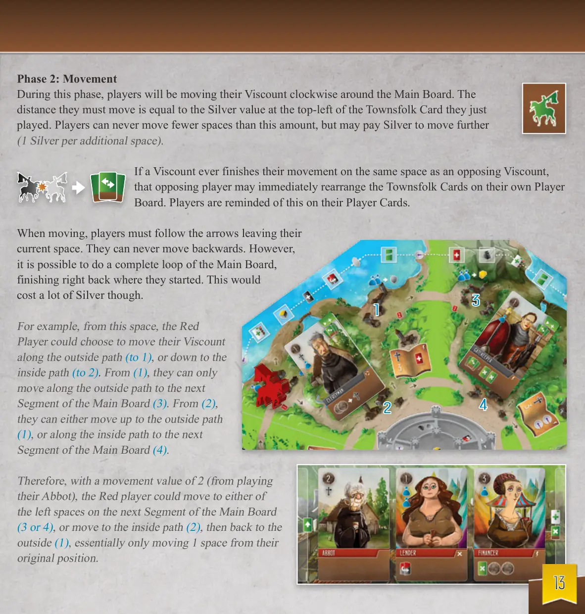
📝 第 13 页 AI 机翻对照（点击展开）
第二阶段：移动
在此阶段，玩家将围绕主版图顺时针移动他们的子爵。他们必须移动的距离等于他们刚刚打出的市民牌左上角的银币价值。玩家绝不能移动少于这个数量的格数，但可以支付银币来移动更远（每额外一格支付1银币）。
如果一个子爵在移动结束时与对手的子爵位于同一格，那么该对手玩家可以立即重新排列自己玩家板上的市民牌。玩家在自己的玩家牌上会收到这个提醒。
移动时，玩家必须遵循离开当前格的箭头方向。他们绝不能向后移动。然而，有可能绕主版图完整一圈，回到起点。不过这会花费大量银币。
例如，从这个格，红方玩家可以选择沿着外侧路径移动他们的子爵（到1），或者向下移动到内侧路径（到2）。从(1)出发，他们只能沿着外侧路径移动到主版图的下一个区域（3）。从(2)出发，他们可以向上移动到外侧路径（1），或者沿着内侧路径移动到主版图的下一个区域（4）。
因此，以移动值2（通过打出他们的修道院长牌），红方玩家可以移动到主版图下一个区域的左侧两个格中的任意一个（3或4），或者移动到内侧路径（2），然后再回到外侧（1），实际上只从原始位置移动了1格。
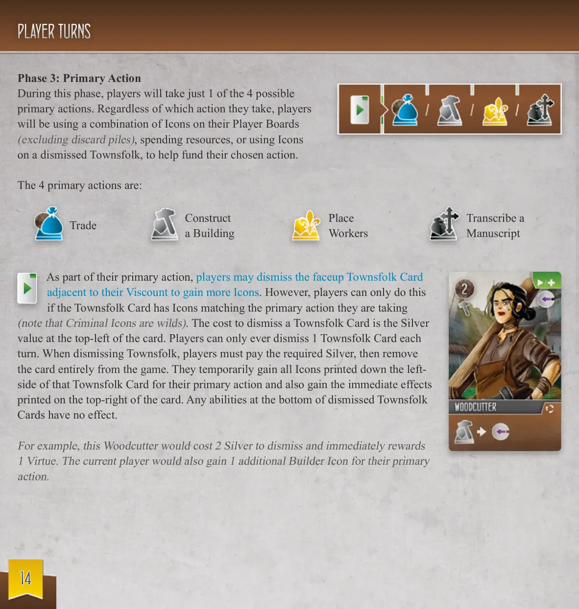
📝 第 14 页 AI 机翻对照（点击展开）
玩家回合
阶段3：主要行动
在此阶段，玩家将选择4种可能的主要行动之一。无论他们选择哪种行动，玩家都将使用其玩家版图上的图标组合（不包括弃牌堆），花费资源，或使用被解雇的城镇居民的图标，来为其选择的行动提供资金支持。
4种主要行动是：
作为其主要行动的一部分，玩家可以解雇其子爵相邻的正面朝上的城镇居民卡，以获得更多图标。然而，玩家只有在城镇居民卡的图标与其正在执行的主要行动相匹配时才能这样做（请注意，犯罪图标是万能牌）。解雇城镇居民卡的成本是卡片左上角的银币价值。玩家每回合只能解雇1张城镇居民卡。当解雇城镇居民时，玩家必须支付所需的银币，然后将该卡片完全从游戏中移除。他们暂时获得该城镇居民卡左侧打印的所有图标，用于其主要行动，并获得卡片右上角打印的即时效果。被解雇的城镇居民卡片底部的任何能力均无效。
例如，解雇这位伐木工将花费2银币，并立即奖励1美德点。当前玩家还将为其主要行动获得1个额外的建造者图标。
贸易
建造建筑
放置工人
抄写手稿
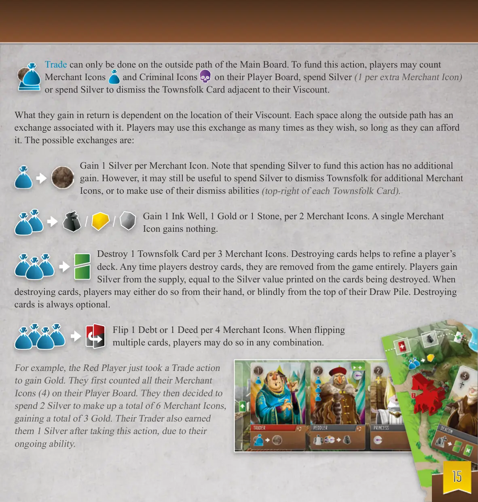
📝 第 15 页 AI 机翻对照（点击展开）
贸易只能在主版图的外围路径上进行。为资助此行动，玩家可以计算其玩家板上的商人图标和罪犯图标，花费银币（每个额外商人图标1枚）或花费银币来解雇其子爵相邻的市民卡。
他们获得的回报取决于其子爵的位置。外围路径上的每个空间都有一个相关的交换。玩家可以随意使用此交换，只要他们负担得起。可能的交换有：
每个商人图标获得1枚银币。请注意，花费银币资助此行动没有额外收益。然而，花费银币解雇市民以获得额外的商人图标，或利用他们的解雇能力（每张市民卡的右上角）可能仍然有用。
每2个商人图标获得1个墨水瓶、1枚金币或1块石头。单个商人图标没有任何收益。
每3个商人图标销毁1张市民卡。销毁卡片有助于优化玩家的牌库。每当玩家销毁卡片时，它们会从游戏中完全移除。玩家从供应中获得银币，数量等于被销毁卡片上印制的银币价值。销毁卡片时，玩家可以从手牌中销毁，也可以从牌库顶部盲目销毁。销毁卡片总是可选的。
每4个商人图标翻转1张债务卡或1张契据卡。当翻转多张卡片时，玩家可以任意组合进行。
例如，红方玩家刚刚进行了一次贸易行动以获得金币。他们首先计算了其玩家板上的所有商人图标（4个）。然后他们决定花费2枚银币，总计达到6个商人图标，从而获得总共3枚金币。由于其持续能力，他们的商人在此行动后还为他们赚取了1枚银币。
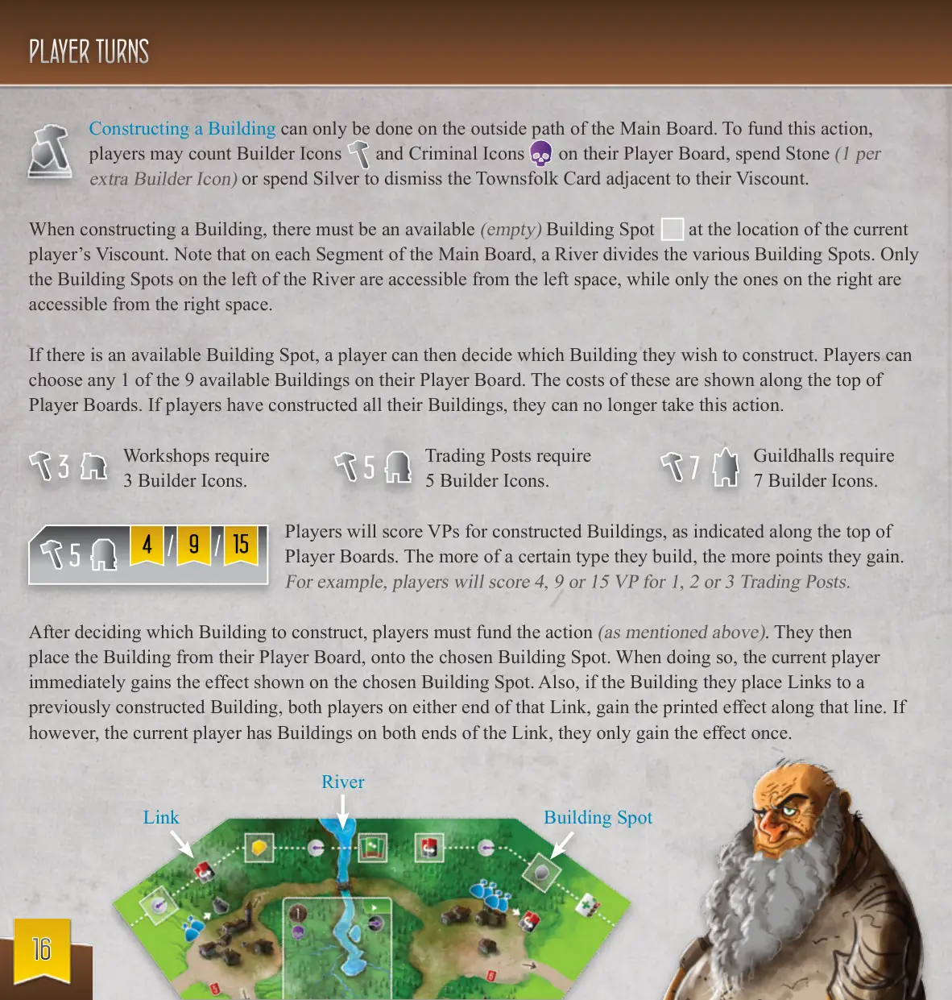
📝 第 16 页 AI 机翻对照（点击展开）
玩家回合
建造建筑只能在主版图的外围路径上进行。为资助此行动，
玩家可以计算其玩家板上的建造者图标 和罪犯图标 ，花费石头（每个额外建造者图标1个）或花费银币来解雇其子爵相邻的市民卡。
建造建筑时，必须在当前玩家子爵的位置有一个可用的（空的）建筑位 。请注意，在主版图的每个区段，一条河流将各个建筑位分开。只有河流左侧的建筑位可以从左侧空间进入，而只有右侧的建筑位可以从右侧空间进入。
如果有可用的建筑位，玩家可以决定要建造哪个建筑。玩家可以选择其玩家板上9种可用建筑中的任意一种。这些建筑的成本显示在玩家板的顶部。如果玩家已经建造了所有建筑，他们不能再执行此行动。
工坊需要
贸易站需要
公会厅需要
3个建造者图标。
5个建造者图标。
7个建造者图标。
玩家会为建造的建筑获得VP，如玩家板顶部所示。他们建造的某种类型建筑越多，获得的分数就越多。
例如，玩家建造1、2或3个贸易站将分别获得4、9或15 VP。
在决定建造哪个建筑后，玩家必须资助该行动（如上所述）。然后他们将建筑从其玩家板放置到所选的建筑位上。这样做时，当前玩家立即获得所选建筑位上显示的效果。此外，如果他们放置的建筑与先前建造的建筑相连，该连线两端的玩家都会获得沿该线印刷的效果。然而，如果当前玩家在连线两端都有建筑，他们只获得一次效果。
连接
河流
建筑位
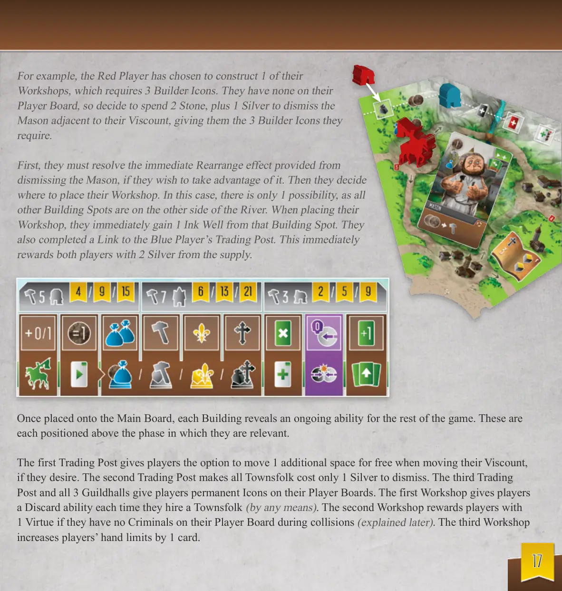
📝 第 17 页 AI 机翻对照（点击展开）
例如，红玩家选择建造1个他们的工坊，这需要3个建造者图标。他们的玩家板上没有建造者图标，因此决定花费2个石头，加上1个银币来解雇他们子爵旁边的石匠，从而获得所需的3个建造者图标。
首先，如果他们想利用这个效果，必须解决解雇石匠带来的立即重排效果。然后他们决定将工坊放置在哪里。在这种情况下，只有1种可能性，因为所有其他建筑位都在河的另一边。当他们放置工坊时，他们立即从该建筑位获得1个墨水瓶。他们还完成了与蓝玩家的贸易站的连接。这立即奖励两位玩家从供应库中获得2个银币。
一旦放置到主板上，每个建筑都会揭示一个持续到游戏结束的能力。这些能力都被定位在它们相关的阶段上方。
第一个贸易站让玩家在移动子爵时，如果愿意，可以选择免费多移动1个格。第二个贸易站使所有市民的解雇成本仅为1个银币。第三个贸易站和所有3个公会厅都会在玩家的玩家板上提供永久图标。第一个工坊让玩家每次雇佣市民（通过任何方式）时获得一个弃牌能力。第二个工坊在碰撞期间（后面会解释）如果玩家的玩家板上没有罪犯，则奖励玩家1个美德。第三个工坊将玩家的手牌上限增加1张卡牌。
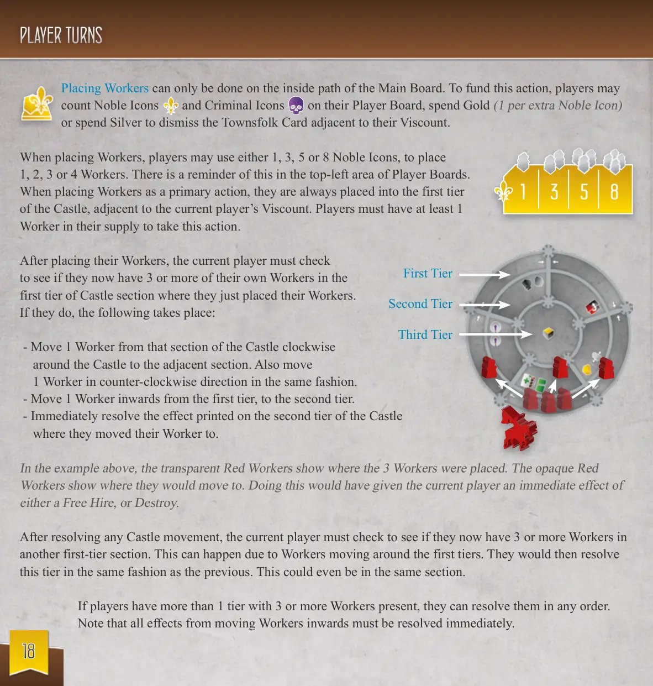
📝 第 18 页 AI 机翻对照（点击展开）
工人放置只能在主版图的内圈路径上进行。为执行此行动，玩家可以计算其玩家板上的贵族图标 和罪犯图标 ，花费金币（每个额外贵族图标1枚）或花费银币来解雇其子爵相邻的市民卡。
放置工人时，玩家可以使用1、3、5或8个贵族图标，来放置1、2、3或4个工人。玩家板的左上角有此规则的提示。
当将工人放置作为主要行动时，他们总是被放置到城堡的第一层，紧邻当前玩家的子爵。玩家必须在其供应中至少有1个工人才能执行此行动。
放置工人后，当前玩家必须检查他们是否在刚刚放置工人的城堡区域的第一层中拥有3个或更多自己的工人。如果是，则执行以下操作：
- 将该城堡区域的1个工人顺时针移动到相邻区域。同样地，以相同方式逆时针移动1个工人。
- 将1个工人从第一层向内移动到第二层。
- 立即解决他们移动工人到的城堡第二层上印刷的效果。
在上面的示例中，透明红色工人显示了3个工人的放置位置。不透明红色工人显示了它们将要移动到的位置。这样做会给当前玩家带来立即效果，可以是免费雇佣或摧毁。
在解决任何城堡移动后，当前玩家必须检查他们是否在另一个第一层区域中现在拥有3个或更多工人。这可能是因为工人在第一层区域之间移动。然后他们会以与之前相同的方式解决这一层。这甚至可能在同一区域。
如果玩家有超过1个层拥有3个或更多工人，他们可以按任何顺序解决这些层。
请注意，所有向内移动工人的效果必须立即解决。
第一层
第二层
第三层
玩家回合
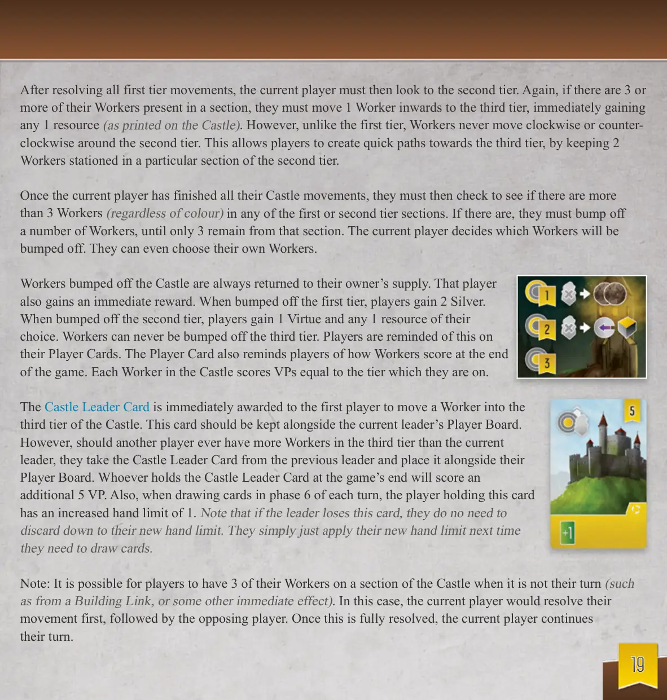
📝 第 19 页 AI 机翻对照（点击展开）
在解决完所有第一层的移动后，当前玩家必须查看第二层。同样，如果他们在某个区域中有3个或更多工人，他们必须将1个工人向内移动到第三层，立即获得任何1种资源（如城堡上所示）。然而，与第一层不同，工人永远不会在第二层上顺时针或逆时针移动。这允许玩家通过在第二层的特定区域保持2个工人，来创建通往第三层的快速路径。
一旦当前玩家完成所有城堡移动，他们必须检查是否有任何第一层或第二层区域中有超过3个工人（无论颜色）。如果有，他们必须撞开一定数量的工人，直到该区域只剩下3个工人。当前玩家决定撞开哪些工人。他们甚至可以选择撞开自己的工人。
被撞出城堡的工人总是返回到其拥有者的供应区。该玩家也会立即获得奖励。当被撞出第一层时，玩家获得2枚银币。当被撞出第二层时，玩家获得1美德和任意1种资源。工人永远不会被撞出第三层。玩家会在他们的玩家卡上被提醒这一点。玩家卡也提醒玩家工人在游戏结束时如何计分。城堡中的每个工人所在的层数等于其获得的VP值。
城堡领袖卡立即授予第一个将工人移动到城堡第三层的玩家。这张卡应与当前领袖的玩家板一起存放。然而，如果有其他玩家的第三层工人数量超过当前领袖，他们会从前任领袖那里拿走城堡领袖卡，并将其放置在自己的玩家板旁。在游戏结束时，持有城堡领袖卡的玩家将额外获得5VP。此外，在每回合第6阶段抽牌时，持有此卡的玩家手牌上限增加1。请注意，如果领袖失去此卡，他们不需要弃牌至新的手牌上限。他们只需在下次需要抽牌时应用新的手牌上限即可。
注意：玩家可能在非自己回合时在城堡的某个区域拥有3个工人（例如通过建筑链接或其他即时效果）。在这种情况下，当前玩家将首先解决他们的移动，然后是对手玩家。一旦完全解决，当前玩家继续他们的回合。
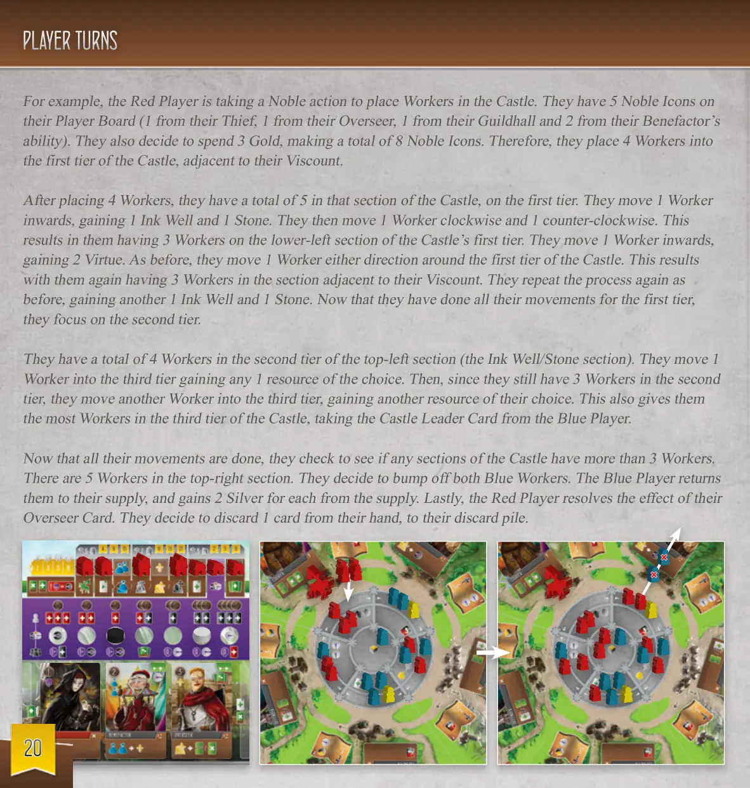
📝 第 20 页 AI 机翻对照（点击展开）
玩家回合
例如，红玩家正在执行贵族行动，将工人放置到城堡中。他们的玩家版图上有5个贵族图标（1个来自他们的盗贼，1个来自他们的监工，1个来自他们的公会大厅，2个来自他们的恩主能力）。他们还决定花费3金币，总共8个贵族图标。因此，他们将4个工人放置到城堡的第一层，紧邻他们的子爵。
放置4个工人后，他们在城堡第一层的该区域共有5个工人。他们将1个工人向内移动，获得1个墨水瓶和1个石头。然后他们将1个工人顺时针移动，1个工人逆时针移动。这导致他们在城堡第一层的左下区域有3个工人。他们将1个工人向内移动，获得2个美德。和之前一样，他们将1个工人沿着城堡第一层向任意方向移动。这导致他们再次在紧邻他们子爵的区域有3个工人。他们重复之前的过程，又获得1个墨水瓶和1个石头。现在他们已经完成了第一层的所有移动，他们专注于第二层。
他们在左上区域（墨水瓶/石头区域）的第二层共有4个工人。他们将1个工人移动到第三层，获得任意1种资源。然后，由于他们在第二层仍有3个工人，他们将另一个工人移动到第三层，获得另一种他们选择的资源。这也使他们成为城堡第三层工人最多的玩家，从蓝玩家那里获得城堡领导者卡牌。
现在他们完成了所有移动，他们检查城堡的任何区域是否有超过3个工人。右上区域有5个工人。他们决定将两个蓝工人挤出去。蓝玩家将工人返回到他们的供应区，并从供应区获得2个银币作为补偿。最后，红玩家解决他们监工卡牌的效果。他们决定从手牌中弃置1张卡牌到他们的弃牌堆。
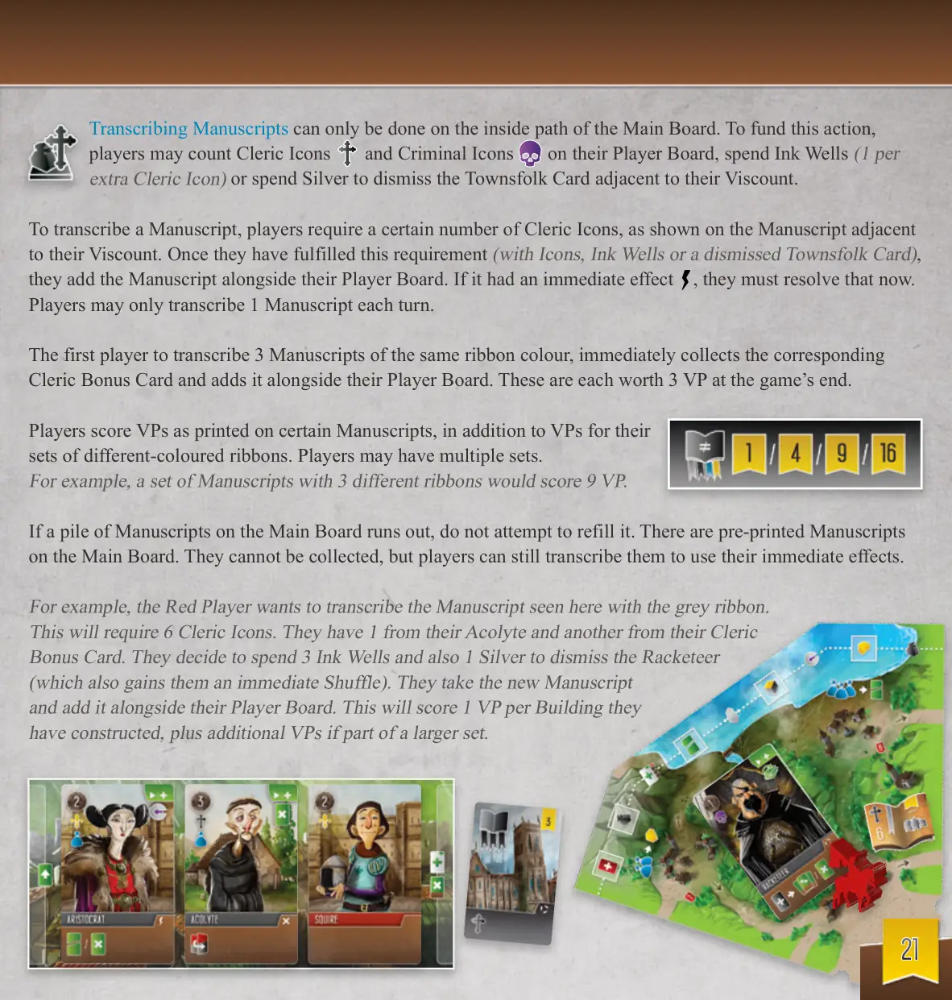
📝 第 21 页 AI 机翻对照（点击展开）
誊抄手稿只能在主版图的内圈路径上进行。为资助此行动，
玩家可以计算其玩家板上的圣徒图标 和罪犯图标 ，使用墨水瓶（每多一个圣徒图标需1个墨水瓶）或花费银币来解雇其伯爵旁边的市民卡。
要誊抄手稿，玩家需要一定数量的圣徒图标，数量如伯爵旁边的手稿所示。一旦他们满足了此要求（通过图标、墨水瓶或被解雇的市民卡），他们将手稿添加到其玩家板旁边。如果手稿有即时效果 ，他们必须立即解决。
玩家每回合只能誊抄1份手稿。
第一个誊抄3份相同颜色丝带手稿的玩家，立即获得相应的圣徒奖励卡并将其添加到其玩家板旁边。这些卡在游戏结束时各值3 VP。
玩家根据特定手稿上印刷的VP获得分数，此外还有不同颜色丝带组合的VP。玩家可以拥有多个组合。
例如，3种不同丝带的手稿组合将获得9 VP。
如果主版图上的手稿堆用完，不要尝试补充。主版图上有预印的手稿。它们不能被收集，但玩家仍然可以誊抄它们以使用其即时效果。
例如，红色玩家想要誊抄这里看到的灰色丝带手稿。
这需要6个圣徒图标。他们有1个来自其修道士，另一个来自其圣徒奖励卡。他们决定花费3个墨水瓶，并花费1银币来解雇敲诈者（这也使他们获得了一次即时洗牌）。他们拿起新手稿并将其添加到其玩家板旁边。这将根据他们建造的建筑数量获得1 VP，如果是更大组合的一部分，还会获得额外VP。
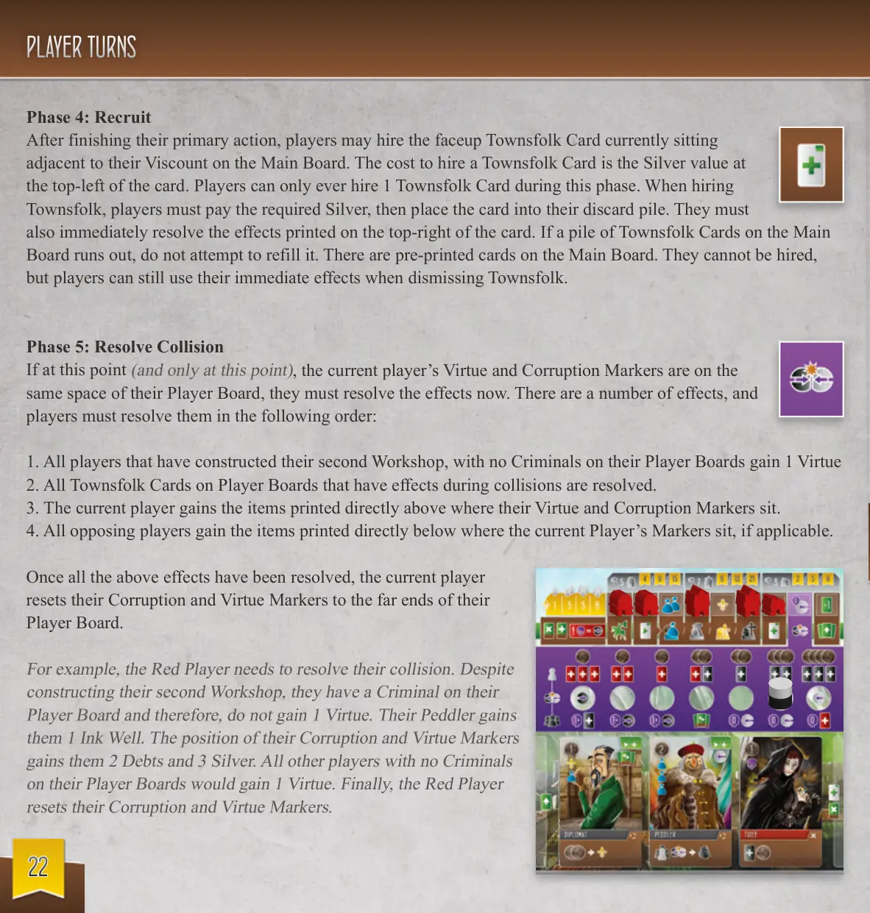
📝 第 22 页 AI 机翻对照（点击展开）
玩家回合
第4阶段：招募
完成主要行动后，玩家可以雇佣主版图上位于其子爵（Viscount）相邻位置的正面朝上的市民卡（Townsfolk Card）。雇佣市民卡的成本是卡牌左上角的银币（Silver）价值。玩家在此阶段只能雇佣1张市民卡。雇佣市民时，玩家必须支付所需的银币，然后将卡牌放入其弃牌堆。他们还必须立即解决卡牌右上角印刷的效果。如果主版图上的市民卡堆用完，不要尝试补充。主版图上有预印制的卡牌。它们不能被雇佣，但玩家在解雇市民时仍可以使用其即时效果。
第5阶段：解决冲突
如果此时（仅此时），当前玩家的美德（Virtue）和腐败（Corruption）指示物在其玩家版图（Player Board）的同一格上，他们必须立即解决这些效果。有多种效果，玩家必须按以下顺序解决：
- 所有已建造第二个工坊（Workshop）且其玩家版图上没有罪犯（Criminal）的玩家获得1点美德。
- 解决玩家版图上所有在冲突时有效果的市民卡。
- 当前玩家获得其美德和腐败指示物所在位置正上方印刷的物品。
- 所有对手玩家获得当前玩家指示物所在位置正下方印刷的物品（如果适用）。
一旦所有上述效果都已解决，当前玩家将其腐败和美德指示物重置为其玩家版图的两端。
例如，红色玩家需要解决其冲突。尽管他们建造了第二个工坊，但其玩家版图上有一个罪犯，因此不获得1点美德。其小贩（Peddler）为其获得1个墨水瓶（Ink Well）。其腐败和美德指示物的位置使其获得2个债务（Debts）和3个银币（Silver）。所有玩家版图上没有罪犯的其他玩家将获得1点美德。最后，红色玩家重置其腐败和美德指示物。
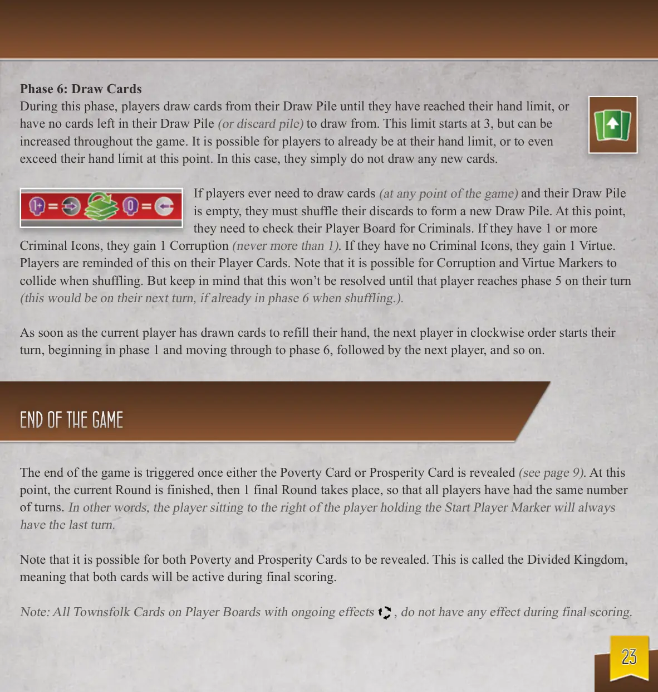
📝 第 23 页 AI 机翻对照（点击展开）
第6阶段：摸牌
在此阶段，玩家从他们的牌库中摸牌，直到达到手牌上限，或者牌库（或弃牌堆）中没有更多可摸的牌为止。这个上限初始为3，但在游戏过程中可能会增加。玩家此时可能已经达到手牌上限，甚至可能超过手牌上限。在这种情况下，他们 simply 不会摸任何新牌。
如果玩家在游戏任何时候需要摸牌而他们的牌库已空，他们必须洗匀他们的弃牌堆以形成新的牌库。此时，他们需要检查他们的玩家版图上的罪犯图标。如果他们有1个或更多罪犯图标，他们获得1点腐败（永远不会超过1点）。如果他们没有罪犯图标，他们获得1点美德。
玩家在他们的玩家卡上会收到这个提醒。请注意，在洗牌时，腐败指示物和美德指示物可能会碰撞。但要记住，这要到该玩家在自己的回合到达第5阶段时才会解决（如果在洗牌时已经处于第6阶段，则会在他们的下一个回合解决）。
当前玩家摸牌补满手牌后，顺时针方向的下一个玩家开始他们的回合，从第1阶段开始，依次进行到第6阶段，然后是下一个玩家，依此类推。
一旦贫困卡或繁荣卡被揭示（见第9页），游戏就会结束。此时，当前轮结束，然后进行1个最终轮，以便所有玩家都有相同数量的回合。换句话说，持有起始玩家标记的玩家右侧的玩家将总是拥有最后一回合。
请注意，贫困卡和繁荣卡都有可能被揭示。这被称为分裂王国，意味着这两张卡在最终计分时都会生效。
注意：玩家版图上所有具有持续效果的城镇居民卡，在最终计分期间没有任何效果。
游戏结束
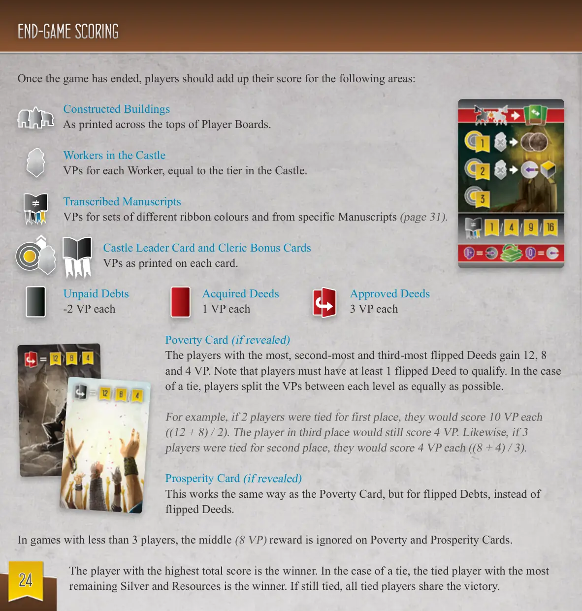
📝 第 24 页 AI 机翻对照（点击展开）
游戏结束计分
游戏结束后，玩家应对以下各项计分：
已建造的建筑
如玩家版图顶部所示。
城堡中的工人
每个工人获得VP值，等于其在城堡中的层级。
誊抄的手稿
不同颜色丝带组合的VP值，以及特定手稿的VP值（第31页）。
城堡领袖卡和牧师奖励卡
每张卡上印有的VP值。
未偿债务
-2 VP/张
获得的契约
1 VP/张
批准的契约
3 VP/张
贫困卡（若已揭示）
拥有最多、第二多和第三多已翻转契约的玩家分别获得12、8和4 VP。请注意，玩家必须至少有1张已翻转契约才有资格。在平局情况下，玩家在各等级间尽可能平均分配VP值。
例如，如果有2名玩家并列第一，他们将各自获得10 VP（(12 + 8) / 2）。第三名玩家仍获得4 VP。同样，如果有3名玩家并列第二，他们将各自获得4 VP（(8 + 4) / 3）。
繁荣卡（若已揭示）
其运作方式与贫困卡相同，但针对的是已翻转债务而非已翻转契约。
在少于3名玩家的游戏中，贫困卡和繁荣卡的中等奖励（8 VP）将被忽略。
总分最高的玩家获胜。在平局情况下，剩余银币和资源最多的平局玩家获胜。如果仍然平局，所有平局玩家共享胜利。
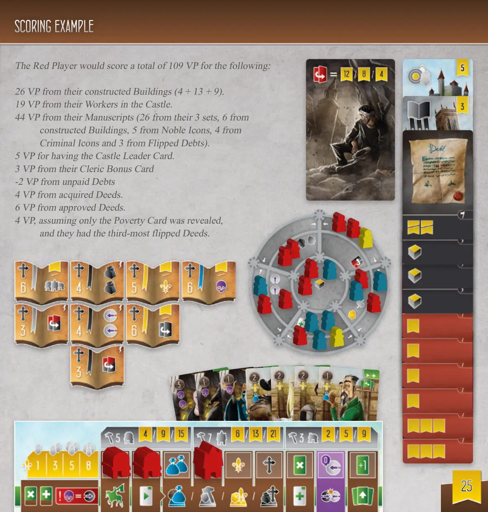
📝 第 25 页 AI 机翻对照（点击展开）
计分示例
红玩家将获得以下总计109 VP：
来自已建造建筑的26 VP（4 + 13 + 9）。
来自城堡中工人的19 VP。
来自手稿的44 VP（来自3套组合的26 VP，来自已建造建筑的6 VP，来自贵族图标的5 VP，来自犯罪图标的4 VP，以及来自已翻转债务的3 VP）。
拥有城堡领袖卡的5 VP。
来自牧师奖励卡的3 VP。
来自未偿债务的-2 VP。
来自获得契约的4 VP。
来自批准契约的6 VP。
4 VP，假设只揭示了贫困卡，并且他们拥有第三多的已翻转契约。
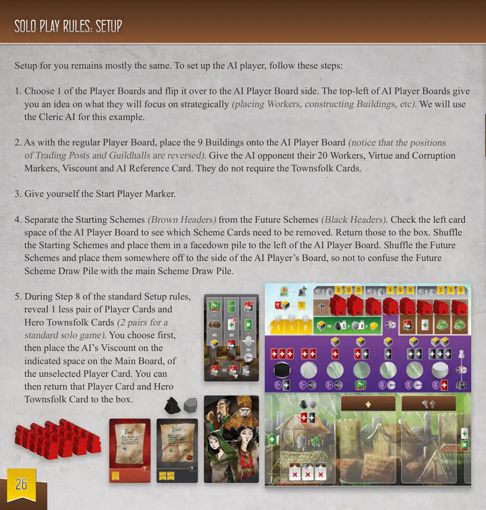
📝 第 26 页 AI 机翻对照（点击展开）
单人模式规则：设置
你的设置基本保持不变。要设置AI玩家，请遵循以下步骤：
- 选择1个玩家版图并将其翻到AI玩家版图面。AI玩家版图的左上角会告诉你它们在战略上会侧重于什么（放置工人、建造建筑等）。在本示例中，我们将使用牧师AI。
- 与常规玩家版图一样，将9个建筑放置在AI玩家版图上（注意贸易站和行会馆的位置是相反的）。给AI对手它们20个工人、美德与腐败标记、子爵和AI参考卡。它们不需要市民卡。
- 给自己起始玩家标记。
- 将起始方案（棕色标题）与未来方案（黑色标题）分开。查看AI玩家版图的左侧卡牌位，看看需要移除哪些方案卡。将这些卡牌放回盒中。洗混起始方案并将它们面朝下放置在AI玩家版图左侧。洗混未来方案并将它们放置在AI玩家版图旁边某处，以免将未来方案抽牌堆与主要方案抽牌堆混淆。
- 在标准设置规则的步骤8期间，少揭示1组玩家卡和英雄市民卡（标准单人游戏为2组）。你先选择，然后将AI的子爵放置在主版图上未被选中的玩家卡所指示的位置。然后你可以将该玩家卡和英雄市民卡放回盒中。
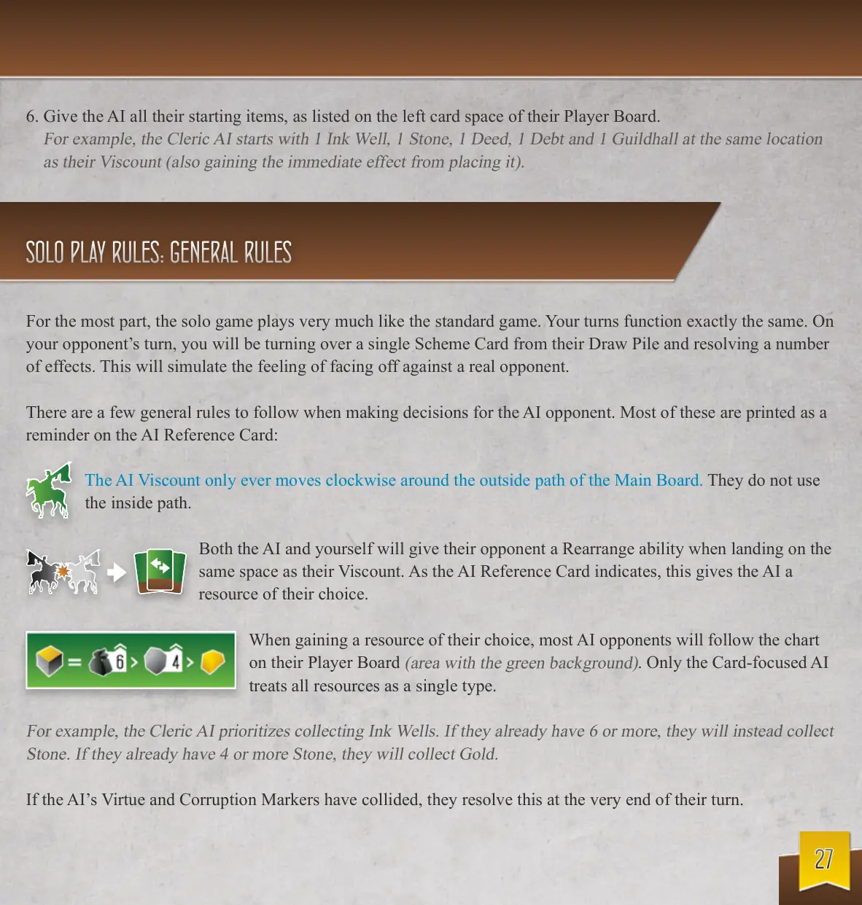
📝 第 27 页 AI 机翻对照（点击展开）
- 将所有起始物品给予AI，如他们玩家板左侧卡牌空间所列。
例如，牧师AI在他们的子爵所在位置开始拥有1个墨水瓶、1个石头、1个契据、1个债务和1个行会（同时获得放置它的即时效果）。
在大多数情况下，单人游戏玩法与标准游戏非常相似。你的回合功能完全相同。在你的对手回合，你将从他们的牌库中翻开一张方案卡并解决一些效果。这将模拟与真实对手对战的感受。
在为AI对手做决定时，需要遵循一些通用规则。其中大部分都作为提醒印在AI参考卡上：
AI子爵只沿着主版图的外围路径顺时针移动。他们不使用内部路径。
AI和你自己都会在落在与他们的子爵相同的空间时给予对手重新排列能力。如AI参考卡所示，这给予AI一个他们选择的资源。
在获得他们选择的资源时，大多数AI对手会遵循他们玩家板上的图表（绿色背景区域）。只有专注于卡牌的AI将所有资源视为单一类型。
例如，牧师AI优先收集墨水瓶。如果他们已经有6个或更多，他们将改为收集石头。如果他们已经有4个或更多石头，他们将收集金币。
如果AI的美德与腐败指示物相撞，他们会在回合结束时解决这一问题。
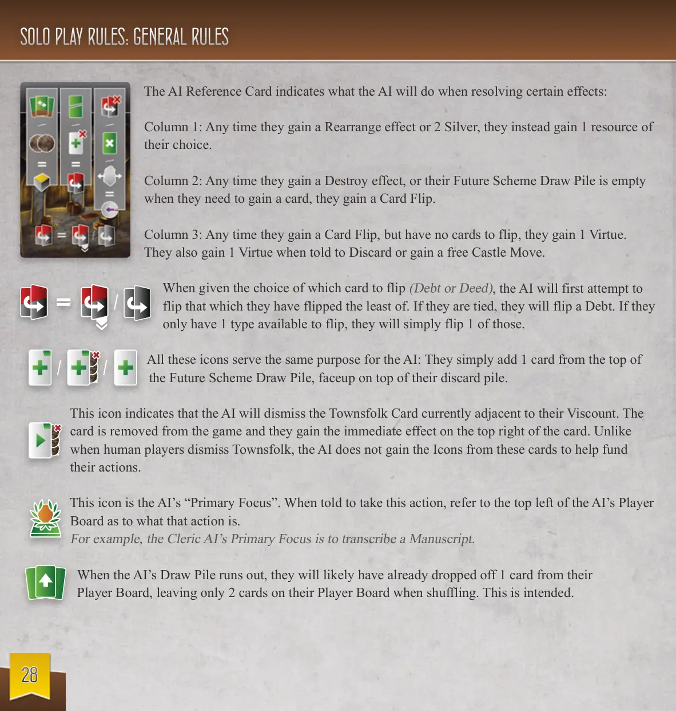
📝 第 28 页 AI 机翻对照（点击展开）
单人游戏规则：通用规则
AI参考卡指明了在解决某些效果时AI会做什么：
第1列：当他们获得重排效果或2枚银币时，改为获得1个他们选择资源。
第2列：当他们获得销毁效果，或者当他们需要获得一张牌时他们的未来计划牌库为空，他们获得一次翻牌。
第3列：当他们获得一次翻牌，但没有牌可翻时，他们获得1个美德。当他们被要求弃牌或获得一次免费城堡移动时，他们也获得1个美德。
当需要选择翻哪张牌（债务或契据）时，AI会首先尝试翻他们翻得最少的那张。如果数量相同，他们会翻一张债务牌。如果他们只有一种类型可翻，他们就会简单地翻一张该类型的牌。
所有这些图标对AI具有相同的目的：它们只是从未来计划牌库顶部添加1张牌，正面朝上放在他们的弃牌堆顶部。
这个图标表示AI会解雇其子爵当前相邻的市民卡。该卡被移出游戏，他们获得卡片右上角的即时效果。与人类玩家解雇市民不同，AI不会从这些卡片中获得图标来帮助资助他们的行动。
这个图标是AI的"主要焦点"。当被指示执行此行动时，请参考AI玩家板左上方以确定该行动是什么。
例如，牧师AI的主要焦点是抄写一份手稿。
当AI的牌库用完时，他们可能已经从他们的玩家板上丢弃了1张牌，洗牌时玩家板上只剩下2张牌。这是有意为之的。
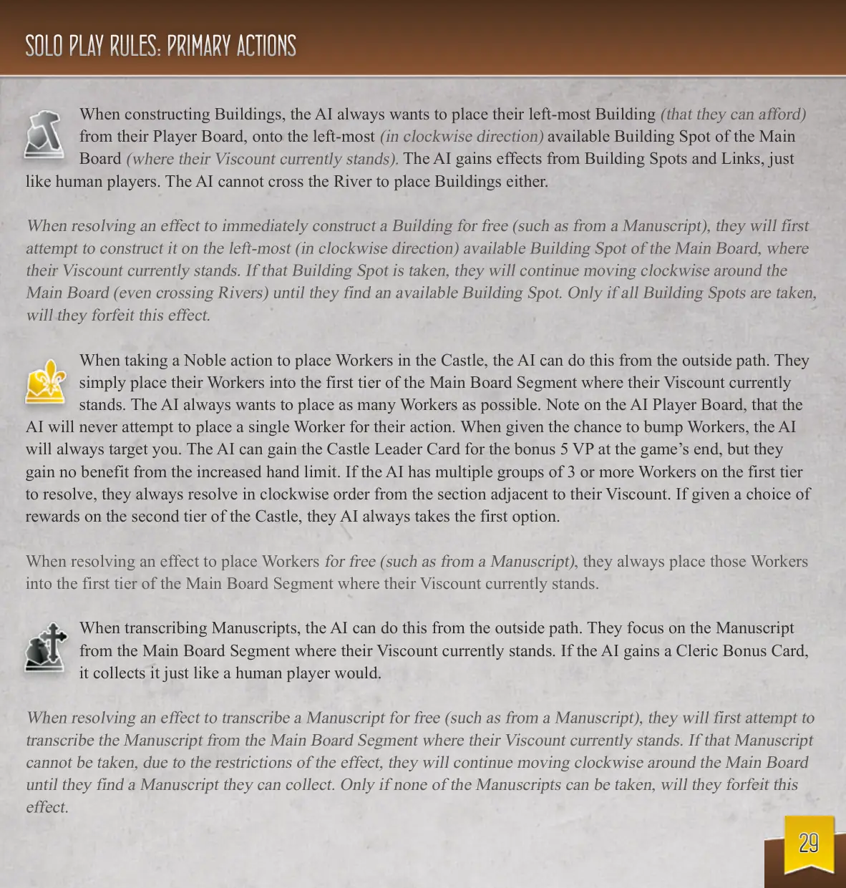
📝 第 29 页 AI 机翻对照（点击展开）
在建造建筑时，AI总是想要将其玩家版图上最左侧的（他们能负担得起的）建筑，放置到主版图上最左侧（顺时针方向）的可用建筑位上（其子爵当前所在的位置）。AI可以从建筑位和连接中获得效果，就像人类玩家一样。AI也不能跨越河流来放置建筑。
在解析立即免费建造建筑的效果时（例如来自手稿），他们会首先尝试将其建造在主版图上最左侧（顺时针方向）的可用建筑位上，其子爵当前所在的位置。如果那个建筑位已被占用，他们会继续沿着主版图顺时针移动（即使跨越河流），直到找到一个可用的建筑位。只有当所有建筑位都被占用时，他们才会放弃这个效果。
在进行贵族行动以在城堡中放置工人时，AI可以从外围路径进行操作。他们只需将工人放置到其子爵当前所在的主版图区域的第一层。AI总是想要放置尽可能多的工人。请注意，在AI玩家版图上，AI永远不会尝试为他们的行动放置单个工人。当有机会撞开工人时，AI总是会针对你。AI可以获得城堡领袖卡以在游戏结束时获得额外的5 VP，但他们不会从增加的手牌上限中获益。如果AI在第一层有多个3人或以上的工人小组需要解析，他们总是从紧邻其子爵的区域开始按顺时针顺序解析。如果在城堡的第二层有奖励选择，AI总是选择第一个选项。
在解析免费放置工人的效果时（例如来自手稿），他们总是将这些工人放置到其子爵当前所在的主版图区域的第一层。
在誊写手稿时，AI可以从外围路径进行操作。他们专注于其子爵当前所在的主版图区域的手稿。如果AI获得了牧师奖励卡，它会像人类玩家一样收集它。
在解析免费誊写手稿的效果时（例如来自手稿），他们会首先尝试从其子爵当前所在的主版图区域誊写手稿。如果由于效果的限制无法获取该手稿，他们会继续沿着主版图顺时针移动，直到找到一个可以收集的手稿。只有当所有手稿都无法获取时，他们才会放弃这个效果。
单人模式规则：主要行动
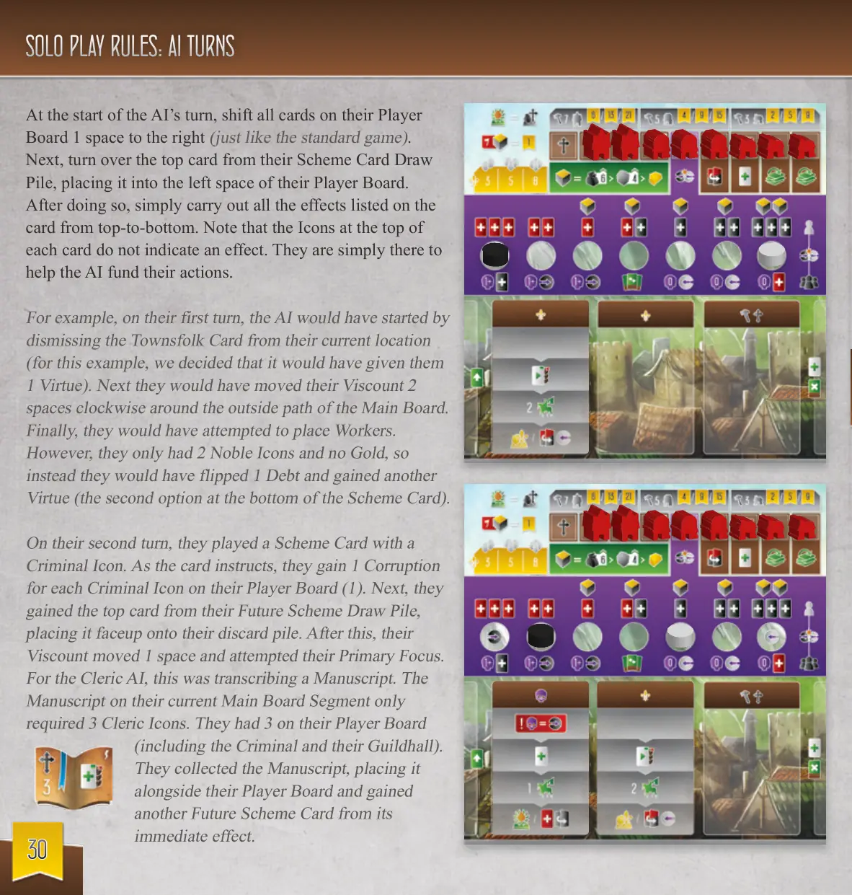
📝 第 30 页 AI 机翻对照（点击展开）
单人模式规则：AI回合
在AI回合开始时，将其玩家板块1上的所有卡牌向右移动1格（就像标准游戏一样）。
接下来，从他们的计划卡牌抽牌堆顶翻开一张卡牌，将其放置到其玩家板块的最左侧空间。
这样做之后，只需按照从上到下的顺序执行卡牌上列出的所有效果。请注意，每张卡牌顶部的图标并不表示一个效果。它们只是帮助AI为其行动提供资金。
例如，在他们的第一回合，AI会先从当前位置解雇市民卡牌（在这个例子中，我们决定这会给予他们1美德）。接着，他们会将他们的子爵顺时针沿着主版图的外围路径移动2格。最后，他们会尝试放置工人。
然而，他们只有2个贵族图标且没有金币，所以他们反而会翻转1个债务并获得另一个美德（计划卡牌底部的第二个选项）。
在他们的第二回合，他们打出了一张带有罪犯图标（Criminal Icon）的计划卡。按照卡牌指示，他们每在自己的玩家板块上有一个罪犯图标就获得1个腐败点（共1个）。接着，他们从他们的未来计划抽牌堆顶获得一张卡牌，将其正面朝上放置到他们的弃牌堆上。之后，他们的子爵移动了1格并尝试执行他们的主要焦点。
对于牧师AI，这是抄写一份手稿。他们当前的主版图段落上的手稿只需要3个牧师图标。他们在自己的玩家板块上有3个（包括罪犯图标和他们的公会厅）。
他们收集了手稿，将其放置在玩家板块旁边，并从其即时效果中获得了另一张未来计划卡。
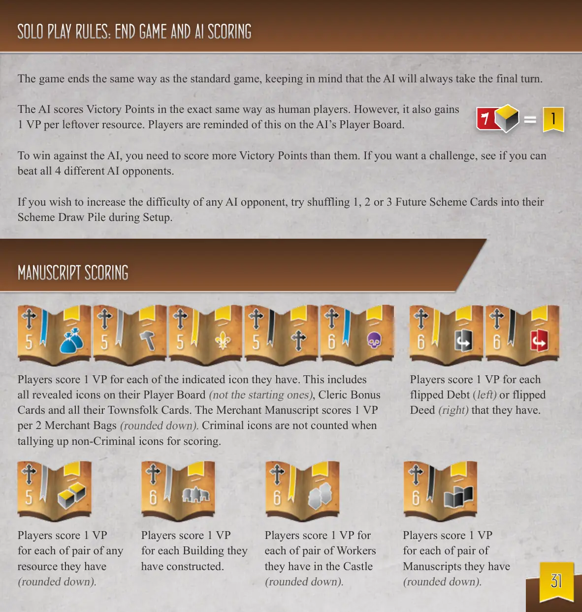
📝 第 31 页 AI 机翻对照（点击展开）
游戏结束方式与标准游戏相同，请注意AI将始终进行最后一回合。
AI获得胜利点的方式与人类玩家完全相同。但是，它还会根据剩余的资源获得1个VP。玩家在AI的玩家板上会提醒这一点。
要战胜AI，你需要获得比他们更多的胜利点。如果你想挑战一下，看看能否击败所有4个不同的AI对手。
如果你想增加任何AI对手的难度，可以在设置期间将1、2或3张未来计划牌洗入其计划牌堆中。
单人模式规则：游戏结束和AI计分
手稿计分
玩家根据他们拥有的每个指定图标获得1VP。这包括他们玩家板上所有已揭示的图标（不是起始图标）、牧师奖励卡和所有他们的城镇居民卡。商人手稿每2个商人袋获得1VP（向下取整）。在计算非犯罪图标得分时，犯罪图标不计入。
玩家根据他们拥有的每种资源的每对获得1VP（向下取整）。
玩家根据他们建造的每座建筑获得1VP。
玩家根据他们在城堡中的每对工人获得1VP（向下取整）。
玩家根据他们拥有的每份手稿获得1VP（向下取整）。
玩家根据他们拥有的每张翻转的债务（左）或契约（右）获得1VP。
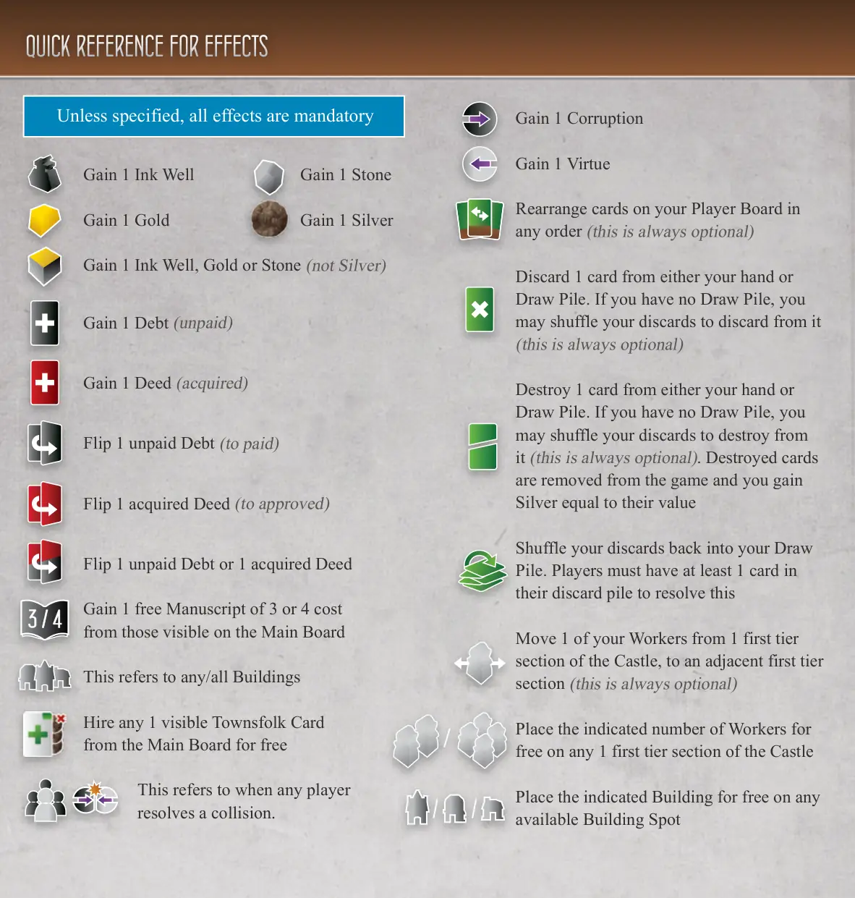
📝 第 32 页 AI 机翻对照（点击展开）
效果快速参考
获得1点腐败
获得1点美德
以任意顺序重新排列你玩家板上的卡牌（这总是可选的）
从你的手牌或牌库中弃置1张牌。如果你没有牌库，你可以将你的弃牌堆洗牌后从中弃置（这总是可选的）
从你的手牌或牌库中摧毁1张牌。如果你没有牌库，你可以将你的弃牌堆洗牌后从中摧毁（这总是可选的）。被摧毁的牌会从游戏中移除，你获得等同于其价值的银币
将你的弃牌堆洗回你的牌库。玩家必须至少有1张牌在他们的弃牌堆中才能执行此效果
将你的1个工人从城堡的第一层级区域移动到相邻的第一层级区域（这总是可选的）
免费将指定数量的工人放置在城堡的任意1个第一层级区域上
免费将指定的建筑放置在任意可用的建筑位上
获得1个墨水瓶
获得1个石头
获得1个金币
获得1个银币
获得1个墨水瓶、金币或石头（不是银币）
获得1个债务（未支付）
获得1个契据（已获得）
翻转1个未支付的债务（为已支付）
翻转1个已获得的契据（为已批准）
翻转1个未支付的债务或1个已获得的契据
从主版图上可见的卡牌中免费获得1张成本为3或4的手稿
这指的是任何/所有建筑
免费从主版图上雇佣任意1张可见的城镇居民卡
这指的是当任意玩家解决碰撞时时
除非特别说明，所有效果都是强制性的